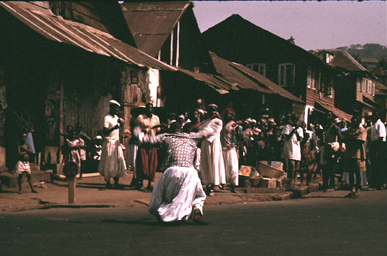

Several points emerge from this examination of oral literature in Africa.
The first is an obvious one. This is the relevance of African oral literature for comparative literature in the wide sense. The study of the kinds of instances and genres touched on in this account can enlarge both our literary experience and our concept of ‘literature’ altogether. It can also throw light on some recent literary experiments (jazz poetry, for instance) as well as on the oral background to literature even in literate cultures. Its significance, in other words, is by no means confined to those with a special interest in the continent of Africa.
The kind of conclusions I myself would draw about the nature of this African literature would be, first of all, to repeat the obvious point of its variety. Not only is generalization difficult, but many of the general conclusions that have been stated to date turn out to be based on relatively little evidence. It now seems obvious, for example, that simple generalizations about the collective nature of art in non-literate cultures cannot hold good in face of the evidence about the creative activity of the individual poet or story-teller, and that the process of artistic composition even in non-literate societies turns out to be more complex than often imagined. Again—and this is perhaps more controversial—I would hold that there is less support than might be expected from the African material for the mythopoeic or archetypal interpretation of literature, or the idea that African literature is all marked by ‘dark mysticism’ or similar catchwords. Finally, the fashionable ‘structural’ approach of Levi-Strauss and his followers has not seemed a fruitful one for any detailed study of actual oral genres in Africa in their own context. This type of elegant but at times rather farfetched analysis turns out, in my opinion, to be less illuminating in the face of the facts than a less ambitious analysis of the obvious meaning and context of actual instances.
Some of these conclusions are no doubt controversial. But the main point that I want to insist on here is that such questions are relevant ones for the study of literature, and ones on which the African material can throw light. It should no longer be acceptable to discuss such problems in the abstract without reference to the actual facts of African literary expression. African oral literature, in short, is part of the literature of the world and should be considered significant as such.
The second main point may not be so obvious. This is the relevance of African oral literature for sociological analysis. It has been well said that a society cannot be fully understood without its songs. But this has sometimes, it seems, been forgotten by the sociologists.1 In particular, those who have concerned themselves with the sociology of foreign and of so-called ‘primitive’ societies have too often neglected to take any serious interest in their literary forms.
This aspect is so important that I want to expand on it a little. Traditional African societies have by and large normally been grouped into the general category of ‘primitive’. And one of the most important differentiating characteristics of this category is normally taken to be the fact of being ‘non-literate’; another is of being ‘simple’. People have found it only too easy to slip from this into the assumption that ‘non-literate’ involved something like our concept of ‘illiterate’ (i.e. someone who in a literate community may be regarded as having failed to master the ways of that particular culture),2 and, further, that ‘simple’ implied simple intellectually or artistically as well as simple in technology. Neither of these assumptions is in fact logically or empirically defensible. In particular, there is nothing necessarily ‘backward’ about a poet in a culture which does not use the written word choosing to express his literary ability through the rich oral medium at his disposal. Furthermore—and this is the pertinent point in this context—it should now be clear from the descriptions and examples given in this book that being non-literate or technologically simple does not mean that such societies are lacking in elaborate artistic forms, in literature, in complex symbolism, in scope for the individual to express his own artistry and insights, or in an awareness of the depths and subtleties of the world and of human life. As a Kongo proverb expresses it: ‘The human heart is not a bag into which one can plunge one’s hand’ (Van Wing 1930: 401). This becomes evident with even a cursory study of oral literature. But it is a facet that is almost always overlooked when people speak of the ‘non-literate’ and ‘simple’ societies of traditional Africa.
This oral literature, furthermore, needs to be taken seriously in its own right. Explaining oral literature away by reference to social or even ‘symbolic’ function is to miss much of its actual detailed significance, and is as much of a disservice to the sociologist as to the literary critic. The relationship between literature and society is too complex and various to be reduced to such generalized explanations. Even for a sociological analysis literature must be considered first in its own terms before an accurate assessment can be made of its role in society. And if some still prefer not to speak of ‘literature’ here, it must at least be admitted that whatever the actual term used there exists a complex oral art in African cultures and that this must be taken seriously into account in any balanced assessment of African societies.
This is a point I want to emphasize. The fact of the existence of this oral art—this literature as I would call it—is something which both throws light on the nature of African societies and also helps to undermine the old view of the quality of non-literate societies generally. It is not something peripheral, but basic to their life and thought. It is something, in short, which, too often forgotten, must be taken into full account by the sociologist in his approach to these societies.
This leads on to one final point. It might be supposed that such literature is dying out with the impact of literate, wealthier, and reputedly more ‘progressive’ cultures. This is not necessarily so at all. Some genres, it is true, are receding; but others—political songs, new versions of dance songs, new religious lyrics—are increasing in importance. Oral literature, in fact, plays its part in developing, not just traditional, Africa.

Figure 26. Dancing in Freetown – continuing site of oral literature and its practitioners, 1964 (photo David Murray).
It is frequently assumed that the only and the natural direction of development for ‘undeveloped’ countries like Africa must be towards greater reliance on the written word. This assumption, however, may not be justified. People have spoken of the ‘revolution’ in communications in Western countries in the last few decades which involves a change to a much greater dependence on auditory forms (the radio in particular) at the expense of the visual (the written word). This greater reliance on auditory forms is something which would not seem at all strange to those brought up in the traditions of spoken literature characteristic of Africa. Indeed this reliance on the spoken word—and thus on oral forms of expression—may well increase rather than decrease in Africa in the future. This is not unlikely to follow increasing European influence, both in its general turning towards non-written forms and in some of the particular literary experiments with oral or semi-oral forms. This tendency towards oral forms may also be intensified as the transistor radio spreads still further. Already there is evidence from all over the continent of the radio being used as the vehicle of oral literary forms—the mvet songs over Yaounde radio, for example, or the Somali balwo, ideal material for broadcasting; and though a medium involving a mass rather than a face-to-face audience must necessarily lead to some changes in the traditional nature of oral art, it is yet clearly related to it. It may be, then, that increasing dependence on the written word may not necessarily be the obvious line of development in the Africa of the future.
Whatever our guess for the future, however, it is clear that oral literature—whether addressed to small family groups, an emir’s court, political rallies, or radio listeners—is not just something of the past. It is relevant for the contemporary analysis of African society and not just for those interested in ‘traditional culture’ or antiquarian researches.
African oral literature, then, is of interest not only for students of literature, but also for sociologists and all those with an interest in African society, past or present. The final note must be, however, to point to the great need for further research into this subject: the present book can provide only an introduction.
Footnotes
1 A term in which I include social anthropologists.
2 A point well made by Andrzejewski 1965: 96.